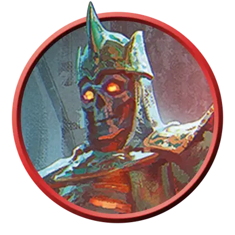

Пылающий скелет
Flaming Skeleton
Средняя Нежить, Принципиальная Злая

Класс Защиты 15 Инициатива +2 (12)
Хиты 65 (10к8 + 20)
Скорость 30 футов
| мод | спас | ||
|---|---|---|---|
| СИЛ | 10 | +0 | +0 |
| ЛОВ | 14 | +2 | +2 |
| ТЕЛ | 15 | +2 | +2 |
| мод | спас | ||
|---|---|---|---|
| ИНТ | 10 | +0 | +0 |
| МДР | 15 | +2 | +2 |
| ХАР | 8 | −1 | −1 |
Уязвимость к урону Дробящий
Иммунитеты Огонь, Яд; Истощение, Отравленный
Чувства Тёмное зрение 60 футов, пассивное Восприятие 12
Языки знает Общий плюс один другой язык, но не говорит
Опасность 3 (700 опыта; БВ +2)
Особенности
Посмертный взрыв. Когда скелет умирает, он взрывается. Спасбросок Ловкости: Сл 12, каждое существо в 10-футовой Эманации, исходящей от скелета. Провал: 14 (4к6) урона Огнём. Успех: Только половина урона.
Свечение. Скелет излучает Яркий свет в радиусе 15 футов и Тусклый свет ещё на 15 футов.
Действия
Пылающий скипетр. Бросок рукопашной атаки: +4, досягаемость 5 фт. Попадание: 5 (1к6 + 2) Дробящего урона плюс 3 (1к6) урона Огнём.
Бросок пламени. Бросок дальнобойной атаки: +4, дистанция 60 фт. Попадание: 7 (1к10 + 2) урона Огнём.
Бонус мастерства +2
Среда обитания Город, Подземье, Царство теней
Сокровища Отсутствуют
Скелеты
Окостеневшее зло
Скелеты восстают по зову некромантов и нечестивых духов. Будь то останки древних усопших или свежие кости, поднятые по мрачному замыслу, — они вершат свою безжизненную работу ради тех сил, что вернули их к подобию бытия. Чаще всего скелеты служат стражами, солдатами или работниками, но в редких случаях их поднимают, не давая определённых указаний.
Совершите бросок по таблице «Пляска смерти» или выберите подходящий результат, чтобы определить, чем занят оставленный без приказа скелет.
Пляска смерти
| 1к6 | Будучи предоставлен сам себе, скелет… |
| 1 | Доставляет подносы с едой или истлевшие письма в склеп своего почившего хозяина. |
| 2 | Без устали упражняется в бою с другими скелетами, хотя его порубили в костяную щепу. |
| 3 | Подражает тому, чем тешил себя при жизни: выступает, танцует или читает. |
| 4 | Занимается привычным делом: убирает, стряпает, копает или молится. |
| 5 | Раз за разом повторяет последние мгновения собственной жизни. |
| 6 | Стоит на страже там же, где нёс караул при жизни. |
Пылающие скелеты объяты огнём необузданной некромантической силы. Эта магия дарует им обжигающие атаки и обострённое чутьё, коим они пользуются, повелевая младшей Нежитью.